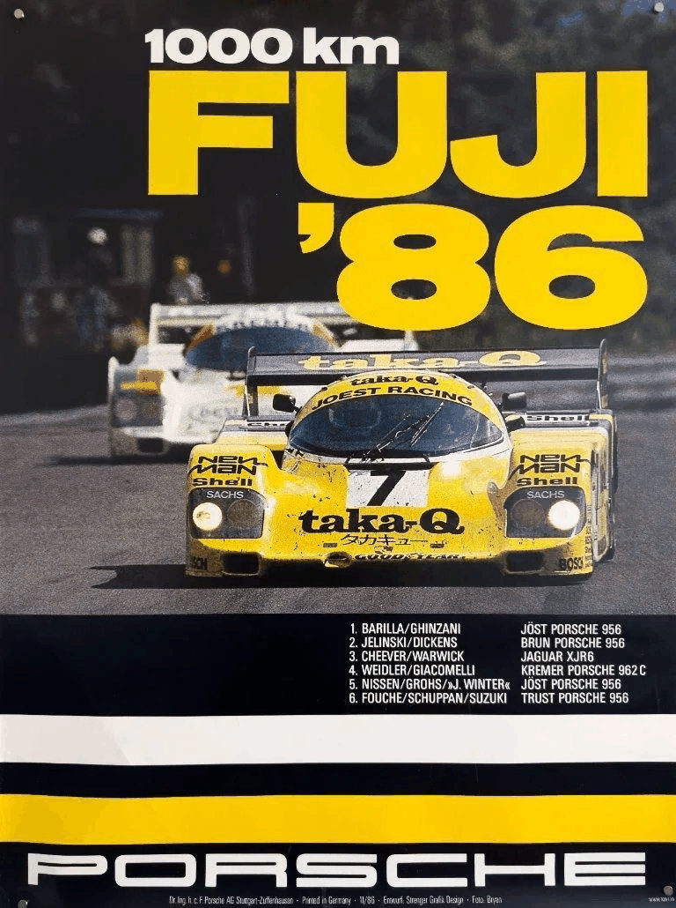

1986年11月印刷 ／ デザイン：Strenger Grafik Design
ヨースト・レーシング ポルシェ956B・7号車
P. バリラ／P. ギンザーニ
富士で生まれた伝説
この日、約8万3千人の観客が見守る富士スピードウェイで、世界スポーツプロトタイプカー選手権の最終戦「富士1000km」が開催されました。
鮮やかな黄色と黒のポルシェ956B・7号車を駆るドイツのプライベートチーム、ヨースト・レーシングが、ポルシェのワークスチームをはじめとする強豪を抑えて優勝しました。
ドライバーはイタリア人のパオロ・バリラとピエルカルロ・ギンザーニ。ちなみにバリラは、世界的なパスタメーカー「Barilla」の創業家出身です。
ル・マンを2度制した、特別なポルシェ
この優勝車には驚くべき経歴がありました。
1984年と1985年のル・マン24時間レースで、まったく同じ車両が2年連続の総合優勝を果たしていたのです。
世界最高峰の耐久レースを連覇した伝説のマシンが、翌1986年、富士でも勝利を飾りました。そしてこの富士の勝利は、名車ポルシェ956が世界選手権で挙げた最後の勝利でもありました。
黄色いポルシェと紳士服のタカキュー
このマシンの印象的なカラーリングは、紳士服チェーン「タカキュー（taka-Q）」のもの。
タカキューは1984年からポルシェのレース活動を支援し、1986年には自社のロゴを掲げたマシンが富士で優勝しました。
興味深いことに、タカキューは現在も公式サイトの「沿革」ページに、この勝利を記録しています。
ドイツの名門レーシングチームと日本の紳士服チェーン。その出会いが生んだ、1980年代ならではの一台です。
レース後に起きた、年間王座の大逆転
この日のドラマは、チェッカーフラッグの後も続きました。
当初、ジャガーが2位と発表され、ドライバーのデレク・ワーウィックは年間チャンピオンとして祝福を受け、花輪をかけてインタビューに応じていました。
ところが約2時間後、周回数の集計ミスが判明。ジャガーは3位に訂正され、年間王座はポルシェのデレク・ベルとハンス＝ヨアヒム・シュトゥックの手に。
その差は、わずか1ポイント。
新チャンピオンの誕生が祝福された後に結果が覆るという、モータースポーツ史でも異例の幕切れとなりました。
このポスターについて
このポスターは、富士での勝利を記念してポルシェが1986年11月に発行した、当時のオリジナル・レーシングポスターです。
デザインを手がけたのは、ポルシェの歴史的なレースポスターを数多く制作した「Strenger Grafik Design」。